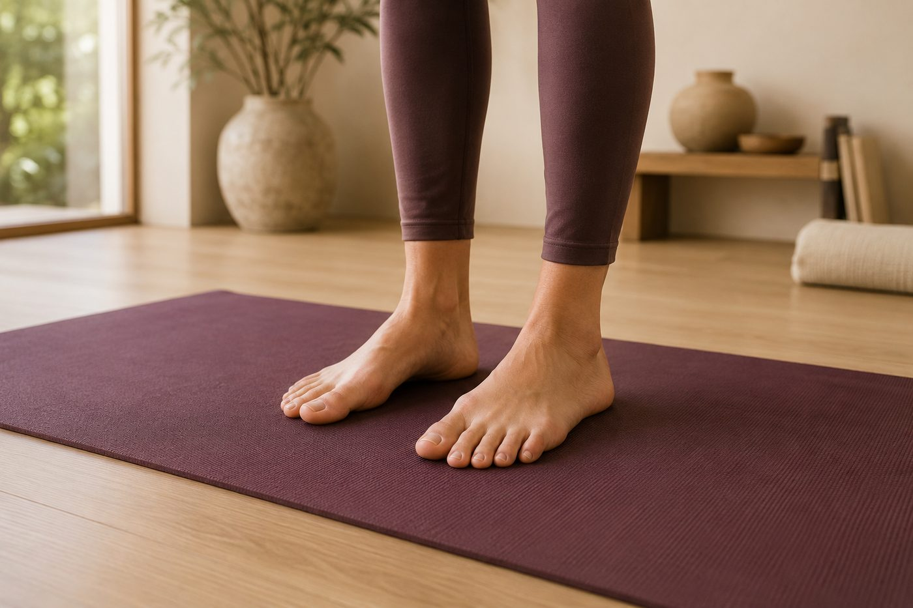

為什麼老師一直說「腳掌踩穩」？穩定從腳開始

「腳掌踩穩」「腳趾抓地板」「重心壓進地面」——上課時你大概聽老師講過不下十次。可是你低頭看，明明踩得很認真，站三角式還是晃，單腳站更是搖搖欲墜。問題常常不是你不夠用力，而是「踩穩」這件事，跟你想的方向不太一樣。
腳，是你和地面唯一的對話窗口
站著的時候，全身上下真正碰到地面的，只有兩隻腳掌那幾片皮膚。你的膝蓋、髖關節、脊椎，全都疊在這個小小的底座上面。所以腳掌怎麼踩，地面回傳上來的力就怎麼走——這條從腳、經過膝、到髖、再到脊椎的路徑，動作科學裡叫「動力鏈」。地基一歪，上面每一層都得想辦法代償。
而且腳掌不只是「承重的墊子」。腳底藏著大量的本體感覺受器，隨時在告訴大腦「你現在偏左還偏右、重心在前還在後」。換句話說，腳同時是地基，也是一顆很靈敏的感應器。這也是為什麼，很多人站不穩，其實不是腿沒力，而是腳掌傳給地面的訊息太模糊、大腦收不到清楚的定位。
「三點紮根」：大拇趾球、小趾球、腳跟
真正的踩穩，關鍵在腳掌底下的三個著力點，你可以把它們想成相機腳架的三隻腳：
- 大拇趾球（大腳趾根部那塊肉墊）：管內側的穩定，也是往前踩、往上推的主要出力點。
- 小趾球（小腳趾根部）：管外側，很多人這一側是空的，重心整個往內倒。
- 腳跟：往後、往下扎根的錨點，讓你站得住、不會前傾。
這三個點像三角形一樣平均踩實，底座才穩。而三角形中間——你的足弓——不是要壓扁貼地，反而要微微「上提」。足底筋膜、脛骨後肌、腓骨長肌這些組織，會把足弓拉成一個有彈性的拱形，像一座小小的吊橋。所以真正的踩穩，是「三個點往下沉、足弓往上收」同時發生的。
踩穩不是死命往下壓，是三點下沉＋足弓上提——一邊往下扎根，一邊往上延伸。
腳一塌，膝蓋和髖就跟著歪
這裡就是最多人誤會的地方。你以為「踩穩」就是用力往下踩、或用腳趾去摳地板；但腳趾一用力摳，腳掌反而僵掉，足弓也跟著垮，結果更不穩。
更麻煩的是連鎖反應。當足弓塌下去、重心倒向內側（過度內旋），脛骨會跟著往內轉，膝蓋就被拉成「內扣」的角度；再往上，髖也跟著內旋、骨盆歪掉。這就是為什麼很多人膝蓋卡卡、久站膝內側痠痛，源頭其實在腳掌，而不在膝蓋本身。負責幫你穩住這條線的臀中肌，也常常因此變得又累又無力。
反過來說，只要把三個著力點找回來、足弓輕輕提起，脛骨轉正、膝蓋對準第二三根腳趾的方向、髖也回到中立位——整條腿到骨盆的排列，就是從腳掌這個地基一路長上去的。這也是為什麼，站姿體式看起來在練腿，其實一直在練你的站姿地基。
壁繩怎麼幫你把「腳」找回來
腳掌踩穩最難的地方，是你一邊要感覺三個點，一邊又怕跌倒，注意力整個被「別倒下去」綁住。壁繩剛好能把這個負擔接走：繩子和牆面給你支撐，你不必再花力氣硬撐平衡，就能把注意力放回腳底，慢慢分辨大拇趾球、小趾球、腳跟——到底哪一點踩空了。
更妙的是，壁繩往上的拉力，會幫你體會那個「往下扎根、同時往上延伸」的雙向感：腳往地板扎，脊椎往天花板長。等身體記住了這個感覺，離開繩子站在墊子上，你也比較容易找回中線、站得更穩。想更深入了解站不穩到底卡在哪，可以看看平衡與中線這篇。
先看清楚：你站著的時候，重心到底偏去哪？
很多代償藏在你自己看不到的角度。AI 體態檢測在教室現場做，能看出你站姿的重心偏移、足弓與膝蓋有沒有互相代償，讓老師知道該從哪裡幫你調起。
加 LINE，預約檢測（首次 $199）→今天可以先記住的一件事
下次站著，不管在瑜伽墊上還是等公車，都可以花十秒鐘做一個小練習：把重心平均放到大拇趾球、小趾球、腳跟這三個點上，感覺足弓輕輕往上收，腳趾放鬆、不要用力摳地。你會發現，光是這樣，膝蓋和骨盆就自己找到比較舒服的位置。
不用急著一次到位。足弓的力量和腳底的感覺，都是練出來的，一開始可能只撐得住幾個呼吸就又垮回去，這很正常。慢慢來，讓腳先學會好好站，上面的一切才有機會跟著對位。
本頁為體態與姿勢的一般衛教與練習分享，非醫療診斷或治療。若有疼痛、舊傷或特殊病史，請先諮詢合格醫療專業人員。